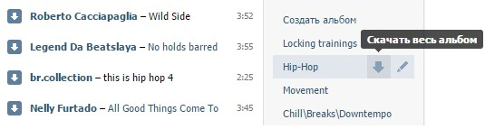

Поддержка проекта
Мы хотим разрабатывать приложения, которые сделают вашу жизнь проще.
Вы можете помочь нам сделать приложение лучше, сделав пожертвование в наш адрес.
Используйте форму ниже для пожертвования.
Принимаются мобильные переводы, карты Visa и MasterCard, переводы через Яндекс.Деньги
Вы можете скачать целый альбом, нажав кнопку "Скачать весь альбом" в
списке альбомов:

После этого все аудиозаписи из альбома будут добавлены в очередь на закачку.
Аудиозаписи из очереди скачиваются одна за другой, чтобы сильно не нагружать компьютер пользователя.
Вы можете удалить аудиозаписи из очереди кликнув на них.